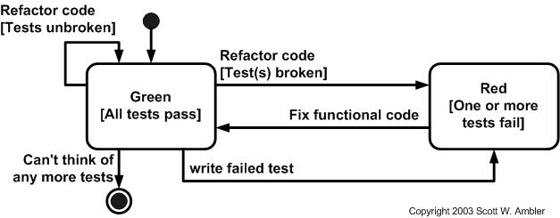

Techtalk:
Test Driven Development
Also known as TDD
- What is TDD?
- Why use it?
-
How to apply it?
By example...
What is TDD?
Made popular by Kent Beck in Extreme Programming
Software Development Process
Test-first development + refactoring
Extreme Programming
We already have lots of feedback during the entire process.

TFD steps
Test driven development is much related to the 'test-first' concepts of XP.

TFD + refactoring == TDD
When we add the rule of removing duplicate code, we get something like the following diagram:

Two levels of TDD

What is a test?
Test is verb meaning "to evaluate".
Test is also a noun, "a procedure leading to acceptance or rejection."\
The negative loop

Turning it up-side-down.
Don't write any code, create a test first.
Obviously, the test will fail...
So, make the test pass!
TDD patterns ("greatest hits")
- Test list
- Isolated tests
- Asserts first
- Test data
- Starter tests
- Learning tests
Create the perfect (test)plan
Don't
←
→
/
#